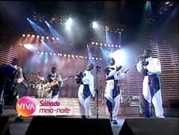
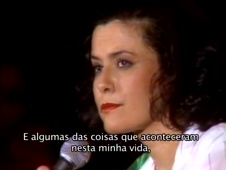

Som Brasil
| reprisado de | 22/05/2010 a 19/02/2011 (1º ciclo) |
|---|---|
| em 5 temporadas, com 39 programas (3 pulos) | |
| frequência | sábados |
| faixa | meia-noite |
| horário alternativo | sáb, ao meio-dia |
Shows de múltiplos gêneros musicais que ostentavam a diversidade de ritmos e talentos nacionais compunham as edições dos anos noventa de Som Brasil, exibido originalmente na Terça Nobre, de 1993 a 1998. No Viva, Som Brasil estreou em 22/05/2010, ao meio-dia, horário que seria seu principal. O alternativo era no mesmo dia, mas mais tarde, à meia-noite e meia.
Após 2 semanas de transmissões, em junho de 2010, essa exibição noturna de Som Brasil foi antecedida em meia hora, para meia-noite (o que empurrou o horário principal de Sexo Frágio, à meia-noite, para a uma da manhã), fazendo desse o seu novo horário principal. O horário diurno assumiu a responsabilidade de alternativo.
Em 26/08/2010, nova alteração com adiantamento nos horários: Caldeirão do Huck, que tinha a edição da Globo apresentada no Viva nos sábados à noite, das 22h à 0h, perdeu esse horário e ficou só com o que antes exercia as vezes de alternativo, no domingo, às 13h. Som Brasil foi adiantado para às 23h, puxando junto Sexo Frágil de volta ao horário em que havia estrado, à meia-noite.
Em outubro de 2010, o Viva estreou o primeiro número de alterações significativas em sua grade de programação. Som Brasil permaneceu no ar, sem grandes mudanças. Apenas seu horário alternativo, agora ocupado por Happy Hour, do GNT, mudou de dia e horário: saiu das manhãs de sábado e foi para às seis da tarde de domingo.
Os programas foram reprisados totalmente desvirtuados de sua ordem de exibição original (consultar aba exibição), mas conquistaram a regalia de terem chamadas individuais para cada edição já a partir de julho de 2010. O primeiro ciclo de Som Brasil foi encerrado em 19/02/2011. De 26/02/2011 a 30/04/2011, alguns programas foram reprisados mais uma vez, mantendo o padrão pouco ligado à cronologia original do programa. O 2º ciclo perdeu o horário alternativo, assumido por Chico Total.
Em maio de 2011, o Viva preparou uma grade de programação especial para comemorar 1 ano no ar. Som Brasil foi suspenso em favor da exibição do programa Esquenta, que permaneceu no ar mesmo após o fim dos festejos. O programa retornou à grade em 13/08/2011, na mesma frequência: aos sábados, onze da noite, e aos domingos, seis da tarde, mas, dessa vez, com as temporadas da década de 2000, iniciadas em 2007.
Nas comemorações de 2 anos do canal Viva, a partir de maio de 2012, Globo de Ouro era exibido de terça-feira a sexta-feira. Em pouco tempo, angariou um horário alternativo aos domingos, às seis da tarde, empurrando o alternativo de Som Brasil para sete da noite. Em julho, Globo de Ouro saiu da frequência diária para semanal, fixando-se aos sábados, às onze da noite. Assim, Som Brasil também foi atrasado em sua exibição principal: constava logo depois, à meia-noite.
Em agosto, Som Brasil foi temporiariamente suspenso em favor de uma exibição de Chico & Caetano. Em janeiro de 2013, a exibição alternativa passou a ir ar antes da do Globo do Ouro, às seis e quinze de domingo. A partir de 02/02/2013, Som Brasil foi substituído por Estação Globo.
Em fevereiro de 2015, aos sábados, o Viva resgatou algumas edições dos anos noventa de Som Brasil, já reprisadas no ciclo original, na esteira do Carnaval: foram reprisadas as edições "Daniela Mercury" (#009), em 14/02/2015; "Axé Bahia" (#033), em 21/02/2015; e "Trio Elétrico" (#035), em 28/02/2015, todas às onze da noite, com horário alternativo nos domingos, às cinco da tarde. No mês de março, o programa permaneceu no ar, às dez da noite do mesmo dia, mas agora tornando a revisitar as temporadas mais recentes.
chamadas
Som Brasil era assim promovido no princípio do Viva: "Os maiores nomes da música brasileira estão aqui, mas é melhor ouvir isso na voz deles... Som Brasil: sábado, meia-noite."

Chamada do programa #014, dedicado a Dorival Caymmi, reprisado em 31/07/2010: "quem não é ruim da cabeça, e nem doente do pé, não vai perder o Som Brasil desta semana, que faz uma homenagem ao grande mestre Dorival Caymmi. Neste sábado, meia-noite, aqui no Viva".
Em agosto de 2010, Som Brasil ganhou uma nova chamada comum a todos os programas: "Imagina como a vida seria sem a música... é, ainda bem que ela existe! Grandes nomes da música brasileira, no Som Brasil: todo sábado, meia-noite, aqui no Viva".

Chamada do programa #008, "Romântico", reprisado em 14/08/2010: "Eles arrancaram muitos suspiros... destruíram corações... e, neste sábado, eles vão passar a noite com você: Som Brasil, meia-noite, aqui no Viva".
- 
Chamada do programa #017, "Pop I", reprisado em 21/08/2010: "Se não fossem as roupas e os cabelos, a gente nem perceberia que se trata de um show dos anos noventa! Neste sábado, meia-noite, os sucessos que marcaram época, no Som Brasil!".
Chamada do programa #015, "Pagode SP", reprisado em 28/08/2010: "Neste sábado, o Som Brasil está cheio de amor para dar!".
Chamada do programa #003, "Forró", reprisado em 04/09/2010: "Neste sábado, o Som Brasil está arretado de bom, porque o Nordeste faz a festa Forró, com muito xote, baião e arrasta-pé. Neste sábado, onze da noite, o forró rola solto no Som Brasil".
Chamada do programa #019, "Pop II", reprisado em 11/09/2010: "Olha quem o Viva convocou para animar a sua noite de hoje! Hoje, onze da noite, os craques da nossa música estão no Som Brasil!".
Chamada do programa #020, "Nordeste", reprisado em 18/09/2010: "Vai todo mundo bater chinela no Som Brasil do próximo sábado!".
Chamada do programa #023, "Zezé di Camargo e Luciano e convidados", reprisado em 18/12/2010: "Próximo sábado, é dia de homenagear Mirosmar José e Welson David. Eles mesmos: Zezé di Camargo e Luciano estão no Viva. Próximo sábado, onze da noite, você vai se emocionar no Som Brasil".
Chamada do programa #037, "Tributo a Elis Regina", reprisado em 25/12/2010: "O Som Brasil faz uma homenagem a maior intérprete do país: Elis Regina, cantanda por família e amigos da nossa pimentinha. Neste sábado, onze da noite, Som Brasil".
- 